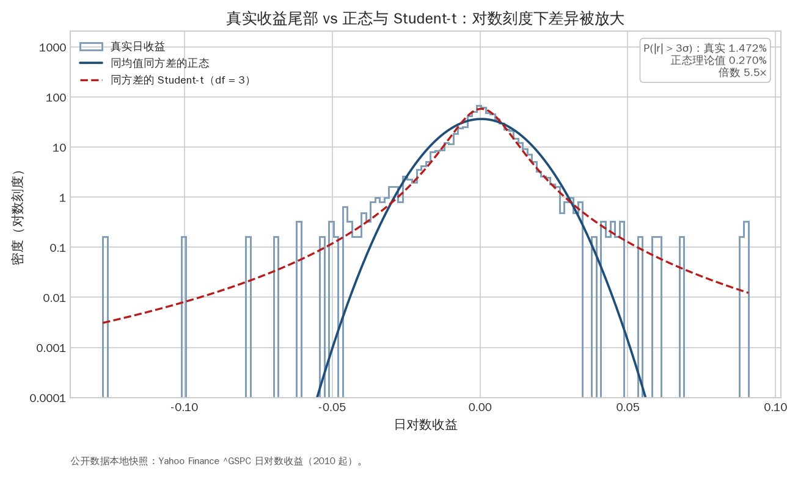
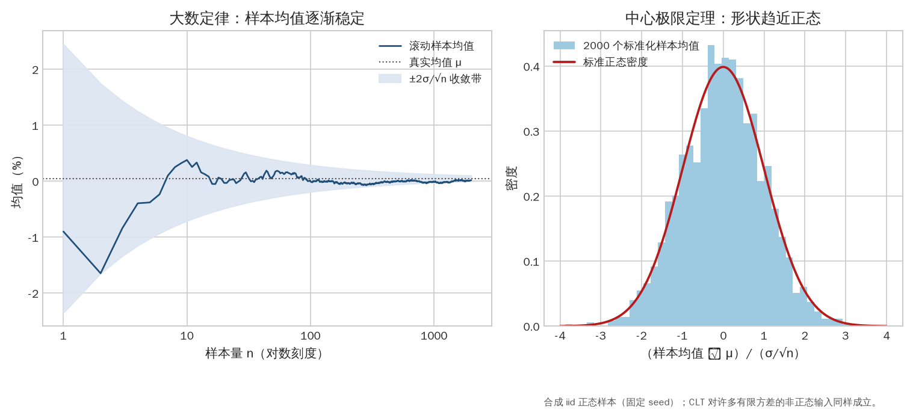
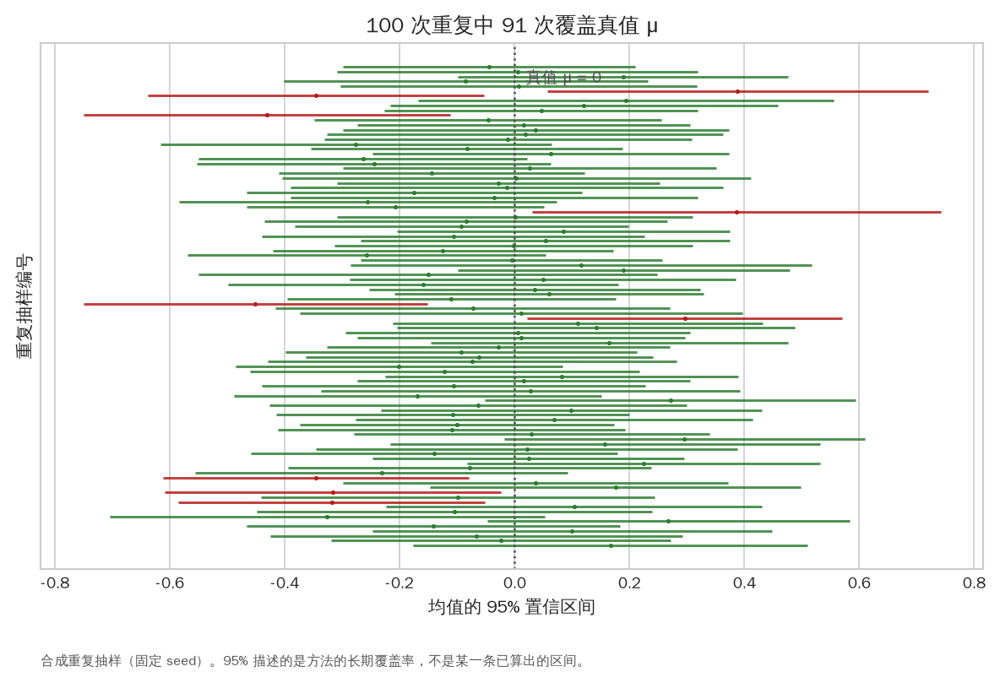
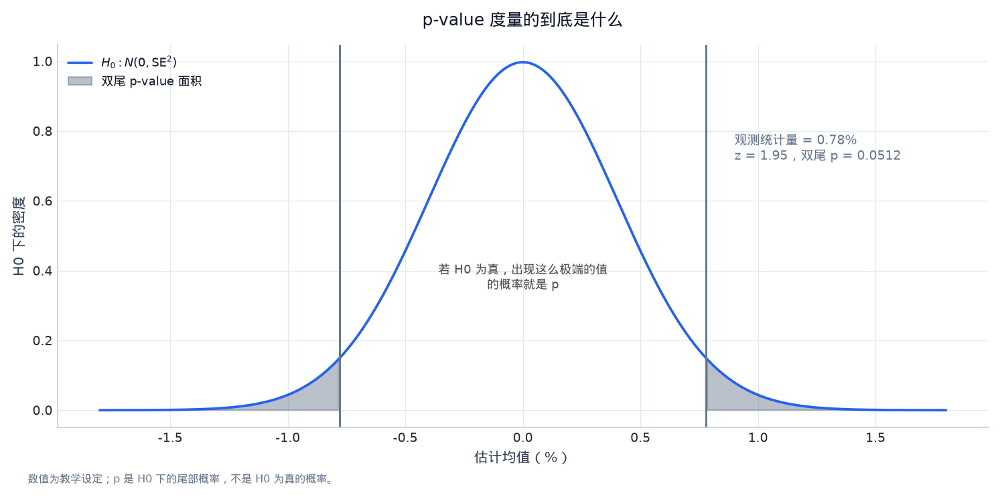
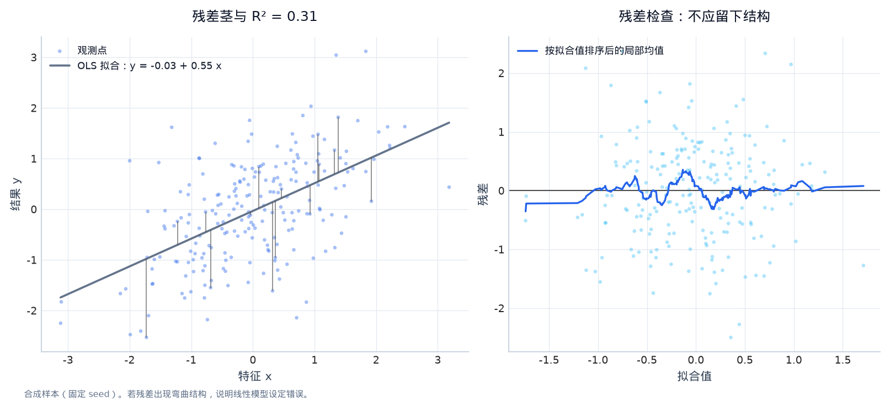
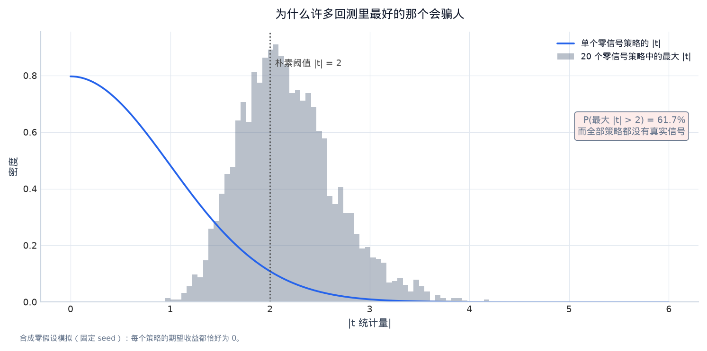

第三章：概率、统计推断与回归（Probability, Statistics and Regression）¶
Quant 面试和研究工作都在处理不确定性。本章不追求把统计学变成公式清单，而是围绕一个研究问题展开：我们观察到一个样本结果，怎样判断它是信号、噪声、偏差，还是被选择出来的巧合？
0. 学习目标¶
完成本章后，你应当能够：
- 用 sample space、event、conditional probability 和 Bayes 定理描述信息更新；
- 区分 expectation、variance、covariance、correlation 和 conditional expectation；
- 理解 Bernoulli、Binomial、Normal、Student-t、Poisson 等分布在量化中的角色；
- 解释 Law of Large Numbers、Central Limit Theorem、confidence interval 和 p-value；
- 从最小二乘目标推导一元线性回归，解释 beta、residual、R² 和标准误；
- 识别多重共线性、异方差、自相关、非平稳和 multiple testing 对研究结论的影响；
- 明白回归系数“显著”与可交易 alpha 之间的差距。
1. 概率语言：从事件到随机变量¶
1.1 Sample space、event 和 random variable¶
Sample space（样本空间） \(\Omega\) 是所有可能结果的集合；event（事件） 是样本空间的子集；概率 \(P(A)\) 衡量事件 \(A\) 发生的可能性。
量化例子：令 \(A\) 表示“下一交易日收益为正”，\(B\) 表示“过去五日动量为正”。我们可能问：
- \(P(A)\)：随机挑一天上涨的概率；
- \(P(A\cap B)\)：动量为正且下一天上涨的概率；
- \(P(A\mid B)\)：已知动量为正时，下一天上涨的概率。
Random variable（随机变量） 把结果映射成数值，例如下一日收益 \(R\)、成交量 \(V\) 或订单到达数 \(N\)。它不是“随机的一列数据”这么简单，还包括定义、支持集和概率分布。
1.2 Conditional probability 和 Bayes theorem¶
条件概率定义为：
由 \(P(A\cap B)=P(A\mid B)P(B)=P(B\mid A)P(A)\)，得到 Bayes 定理：
- \(P(A)\)：prior（先验）；
- \(P(B\mid A)\)：若假设 A 为真，观察到 B 的 likelihood（似然）；
- \(P(A\mid B)\)：看到 B 后更新的 posterior（后验）。
例：某事件真实发生率为 1%，检测器在事件发生时 95% 报警，在没有事件时有 5% 误报。观察到报警后的真实概率是：
报警很“准”不等于报警后事件概率为 95%，因为 base rate（基准发生率）很低。量化研究中，一个看起来很好的信号也必须和先验命中率、信号覆盖率和交易成本一起看。
1.3 Independent、mutually exclusive 与 conditional independence¶
事件 A、B 独立意味着：
等价于 \(P(A\mid B)=P(A)\)。互斥（mutually exclusive）意味着不能同时发生，二者不是同一个概念。两个事件可以互斥但不独立。
在机器学习中经常需要条件独立假设，例如朴素 Bayes 假定给定类别后特征条件独立。假设简化了估计，但若特征有共同来源，结果可能过度自信。
2. Expectation、variance 与协方差¶
2.1 期望¶
离散随机变量的期望：
连续变量：
期望是长期重复实验的平均，不表示一次结果一定接近它。条件期望 \(E[X\mid Z]\) 表示在知道 Z 后对 X 的平均预测，是回归和最优预测的理论核心：在平方损失下，最优预测是条件均值。
期望的线性性始终成立：
不需要 X、Y 独立。这解释了为什么组合的期望收益是权重期望收益的线性组合。
2.2 方差和波动¶
标准差 \(\sigma_X=\sqrt{Var(X)}\) 是与 X 同单位的离散程度。方差对极端值使用平方，因此 outlier 会强烈影响它。金融收益的方差可能随市场状态变化，历史标准差只是窗口内的估计。
若 \(a,b\) 为常数：
加上常数不改变风险，杠杆放大一倍则波动约放大一倍。
2.3 协方差与组合¶
组合 \(Z=aX+bY\) 的方差：
交叉项可能为负，说明两个风险源部分抵消；也可能为正，说明它们在同一坏状态中共同损失。用样本协方差代替真实协方差时，要记录窗口、频率和缺失同步方式。
3. 常见概率分布及其研究直觉¶
3.1 Bernoulli 与 Binomial¶
Bernoulli 随机变量只有成功 1 和失败 0，成功概率为 \(p\)：
独立重复 \(n\) 次成功次数服从 Binomial：
它适合描述固定命中概率下的胜负次数，但金融交易往往有不同盈亏大小和相关状态，不能只用胜率评价策略。胜率 80% 但每次亏 5、赢 1，仍可能亏损。
3.2 Normal 与 Student-t¶
正态分布由均值 \(\mu\) 和方差 \(\sigma^2\) 决定，中心极限定理让许多均值统计量在大样本下近似正态。但单日金融收益通常厚尾，t 分布常用来表示比正态更频繁的极端值。
正态假设下 95% 区间约为 \(\mu\pm1.96\sigma\)。若尾部更厚，该区间会低估极端发生概率。不要把“画出来像钟形”当成检验。

图 3-1｜真实尾部比正态厚。 对数刻度把尾部差异放大：真实日收益在 |r| > 3σ 区域的样本频率约为同方差正态理论值的 5.5 倍，而同方差的 Student-t（df = 3）更贴近真实形状。任何用正态分位数算出的风险限额都会系统性低估极端日。数据类型：公开数据本地快照（Yahoo Finance ^GSPC 日对数收益，2010 年起）。
3.3 Poisson 与计数¶
Poisson 分布常用于固定时间内事件到达数：
订单到达、交易笔数或跳跃次数可能用它作为起点，但市场数据通常存在 over-dispersion（方差大于均值）、聚集和昼夜季节性，需要扩展模型。
4. Law of Large Numbers 与 Central Limit Theorem¶
4.1 大数定律（LLN）¶
在适当条件下，样本均值随着样本量增加趋近于总体期望：
LLN 解释了为什么长时间重复实验可以估计均值。但金融市场的分布可能随时间变化，增加样本不一定把不同 regime 混成一个稳定总体。
4.2 中心极限定理（CLT）¶
若样本独立同分布且方差有限：
CLT 是构造均值置信区间的基础，不是说原始收益一定正态。时间序列自相关、重尾和结构变化会改变有效样本量。若收益一阶自相关为正，100 个观察值的信息量可能少于 100 个独立样本。

图 3-2｜LLN 与 CLT 的两张脸。 左图：随着样本量增加（对数横轴），滚动样本均值被 ±2σ/√n 收敛带夹逼到真值 μ。右图：2000 次重复抽样、每次 200 个观测，标准化后的样本均值直方图与标准正态密度几乎重合。CLT 说的是“均值的分布”，不是“原始收益正态”。数据类型：固定 seed 的合成 iid 样本。
5. Confidence interval、p-value 和 hypothesis test¶
5.1 置信区间的正确解释¶
一个 95% confidence interval（置信区间）是由重复抽样程序构造的区间：长期看，约 95% 的这种区间会覆盖真实参数。它不是“真实参数有 95% 概率落在这一个已算出的区间里”的严格频率学解释。
均值的近似区间：
当样本小、总体方差未知时常用 Student-t 临界值而非正态临界值。

图 3-3｜95% 置信区间的正确含义。 每一行是一次独立抽样算出的 95% 置信区间，红色行是没有覆盖真值 μ = 0 的少数几次。95% 描述的是这个“造区间的方法”的长期覆盖率，而不是某一条已算出区间包含真值的概率。数据类型：固定 seed 的 100 次合成重复抽样。
5.2 Null、alternative 和 p-value¶
设零假设 \(H_0:\mu=0\)，备择假设 \(H_1:\mu>0\)。p-value 是在 \(H_0\) 为真时，观察到当前或更极端统计量的概率。它不是 \(H_0\) 为真的概率，也不是策略赚钱概率。

图 3-4｜p-value 是尾部面积。 曲线是零假设 H0 下估计量的分布，红色竖线是观测统计量及其镜像，阴影面积就是双尾 p-value：若 H0 为真，出现这么极端或更极端结果的概率。它不是 H0 为真的概率，也不是策略赚钱的概率。数据类型：教学设定数值（se = 0.4%，观测 0.78%）。
低 p-value 可能来自真实效应，也可能来自：
- 偷看未来或标签污染；
- 重复尝试许多特征后只报告最好一个；
- 误用独立样本标准误；
- 样本选择或数据修订；
- 忽略交易成本和容量。
6. 从最小二乘推导线性回归¶
6.1 一元回归¶
模型：
最小二乘选择 \(\hat\alpha,\hat\beta\) 使残差平方和最小：
对 \(\alpha,\beta\) 求导并令零，可得：
在资产定价中，\(y_i\) 可以是股票超额收益，\(x_i\) 可以是市场因子；在截面研究中，\(x_i\) 可以是过去动量，\(y_i\) 可以是下一期收益。
6.2 预测与解释要分开¶
回归有两种不同用途：
- Prediction（预测）：用 \(x\) 预测未来 \(y\)，重点是样本外误差；
- Inference（推断）：解释 \(\beta\) 的方向、大小和不确定性，重点是识别假设和标准误。
一个变量对当前收益有解释力，不代表它能预测未来；一个变量样本外能预测，也不代表它揭示了因果机制。面试回答时先说清楚目标。
6.3 R² 和残差¶
总平方和可分解为解释平方和与残差平方和：
R² 是样本内变异被解释的比例，不是收益率、概率或经济价值。金融预测中低 R² 很常见，但如果信号稳定、成本低、组合分散，仍可能有经济意义。反过来，高 R² 可能只是把时间趋势或泄漏字段放进了模型。

图 3-5｜拟合、残差与 R²。 左图散点是合成样本，红线是 OLS 拟合，灰色茎线是残差；R² 只度量样本内被解释的变异比例。右图把残差对拟合值画出来并叠加滚动均值：若残差留下弯曲或喇叭形结构，说明模型设定或方差假设错了。数据类型：固定 seed 合成样本。
7. 多元回归、共线性和标准误¶
多元模型：
若 \(X^TX\) 可逆，最小二乘解：
当特征高度相关时，\(X^TX\) 接近奇异，系数对样本扰动很敏感，这称为 multicollinearity（多重共线性）。预测可能仍然不错，但单个系数方向和显著性不稳定。解决思路包括删减特征、正则化、主成分或解释因子组合而非单个系数。
经典 OLS 标准误假设残差同方差、独立。金融时间序列经常有：
- heteroskedasticity（异方差）：波动随市场状态变化；
- autocorrelation（自相关）：残差随时间相关；
- non-stationarity（非平稳）：均值、方差或关系随时间改变。
可考虑 robust standard errors、Newey–West、block bootstrap 或直接采用时间序列/状态模型。但换一种标准误不能修复标签泄漏或样本选择。
8. Cross-sectional regression 与因子研究¶
在每个日期对许多资产做截面回归：
这里使用 \(t\) 时点已知的特征预测 \(t+1\) 收益。可以研究单个特征的平均 \(\beta_t\)、特征组合收益或 Fama–MacBeth 类的两步方法。必须处理：
- 不同资产的缺失和上市/退市；
- 行业、国家和市值暴露；
- 截面相关和时间相关标准误；
- microcaps 的流动性和交易成本；
- 标签窗口重叠造成的相关性。
9. 相关性不等于因果性¶
如果雨天冰淇淋销量和交通事故都增加，二者相关可能由温度或出行人数驱动。市场研究中的共同驱动包括市场 beta、行业、利率、季节和流动性。判断因果至少要问：
- 变量的时间顺序是否符合机制？
- 是否存在共同原因或反向因果？
- 换样本、地区、定义后关系是否稳定？
- 是否有自然实验、事件窗口或工具变量支持识别？
- 即使是预测关系，是否能在成本后交易？
量化实习研究通常先追求可靠预测，不一定声称因果，但必须避免把相关性写成因果故事。
10. Multiple testing 与研究者自由度¶
如果独立检验 100 个无效策略，每个在 5% 水平下检验，期望也会出现约 5 个“显著”结果。若研究者不断修改窗口、宇宙、标签、成本和样本区间，实际试验次数更多。

图 3-6｜多重检验让 |t| > 2 变得廉价。 蓝色曲线是单个零信号策略的 |t| 分布，红色直方图是 20 个零信号策略里最大 |t| 的分布：在完全没有真实信号的世界里，约六成的实验会出现 |t| > 2 的“最佳策略”。这就是只报告最好回测的欺骗性来源。数据类型：固定 seed 的 4000 次零假设模拟。
缓解方法：
- 预先写 hypothesis 和 primary metric；
- 保留不可触碰的 out-of-sample test；
- 记录所有尝试，而不是只保存最好的 notebook；
- 报告 family-wise/FDR 或使用经济先验缩小搜索空间；
- 对参数、资产、时期和成本做鲁棒性矩阵；
- 用新数据或纸面交易进行前瞻验证。
11. 将统计概念映射到代码¶
在项目 A/B 中可以逐项找到对应关系：
| 统计概念 | 项目中的实现 | 检查点 |
|---|---|---|
| sample mean/std | metrics.py |
ddof、缺失值、年化因子 |
| covariance/correlation | pandas/numpy rolling stats | 同步日期、窗口长度 |
| regression | models.py 的 Ridge/OLS 思路 |
训练窗口不能包含未来 |
| confidence/robustness | 多窗口和成本压力测试 | 是否只报告最好结果 |
| conditional prediction | 特征在 t、标签在 t+1 | shift(1) 是否正确 |
不要因为库函数能返回一个数字，就跳过对输入时间和单位的解释。
12. 常见误解¶
- “p-value 小于 0.05 就是真 alpha。” 它只是在特定零假设、模型和抽样假设下的尾部概率。
- “样本越多越好。” 把不同 regime、修订后数据和非同质样本混在一起可能增加偏差。
- “R² 高就是可交易。” 样本内拟合、趋势、泄漏和交易成本都可能让 R² 与收益无关。
- “回归 beta 就是因果影响。” 需要识别假设；研究中常见的 beta 只是条件相关。
- “正态分布足以做风险。” 厚尾、偏度、跳跃和流动性会让尾部严重偏离正态。
13. 手工练习¶
练习 A：Bayes¶
某市场状态为“高波动”的先验概率为 20%。一个指标在高波动时出现的概率为 70%，在低波动时误报概率为 10%。观察到指标后，高波动后验概率是多少？写出分母的全概率展开。
练习 B：回归¶
给定 \(x=[1,2,3]\)、\(y=[2,2,5]\)，计算 \(\bar x,\bar y,\hat\beta,\hat\alpha\)，写出每个点的残差。再说明仅三个点无法证明可交易预测。
练习 C：研究设计¶
你发现过去五日收益与下一日收益正相关。请列出至少五个替代解释：市场趋势、非同步交易、成本、标签重叠、数据对齐、择期、共同因子等，并为每个解释设计一个检查。
从概率课程到研究模型¶
条件期望、全概率与全方差¶
对状态变量 S，全期望公式是 E[Y]=E[E[Y|S]]；二元状态时就是按状态概率加权。它解释了为什么一个信号在牛市有效、在危机失效时，全样本平均效果可能接近零。配合
可以把“策略赚不赚钱”拆成状态内预测能力与状态间暴露。研究报告应先给全样本，再给预先定义的状态分组；不能事后只挑最好的 regime。
MLE、方法矩与可识别性¶
最大似然估计（Maximum Likelihood Estimation, MLE）选择使观测数据概率最大的参数：theta_hat = argmax_theta Σ log p_theta(y_i). 方法矩（Method of Moments）则把样本矩匹配到理论矩，例如用样本均值估计正态均值。两者都依赖模型族和可识别性：若两个不同参数产生相同分布，就算样本无限也无法区分。量化中的波动模型、收益分布、文本分类器都要写明“估计的对象”和“模型假设”，不要把估计参数说成真实因果参数。
次序统计量、熵与信息¶
分位数组合、最大回撤和 top/bottom spread 都先排序再计算，属于次序统计量相关对象；它们的不确定性不能直接套用均值的标准误。熵 H(X)=-Σp log p 衡量不确定性，条件熵衡量给定信息后的剩余不确定性；文本模型的高分类置信度只说明模型内部判断，不自动说明未来收益熵下降。MGF M_X(t)=E[e^{tX}] 在存在时生成矩，适合检查分布理论，不是回测 alpha。
回归的几何与研究含义¶
OLS 是把 y 投影到特征矩阵的列空间；一元斜率 Cov(X,Y)/Var(X) 是最佳线性预测系数，而非因果效应。多元特征共线时，单个系数可能大幅变化，但预测仍稳定；应报告整体 out-of-sample 指标、系数不确定性和暴露，而不是只看一个 p-value。Ridge 把 lambda ||beta||_2^2 加到目标中，降低方差，lambda 只能用训练—验证流程选择。
14. 本章小结¶
概率给出描述不确定性的语言，统计把样本变成参数估计，回归把变量之间的关系写成可检验模型。LLN 和 CLT 解释大样本近似的来源，置信区间和 p-value 描述估计不确定性，协方差和 beta 描述组合与因子风险。
在量化研究中，最大的统计错误往往不是公式求导错，而是把不可交易信息当作可用信息、把相关当因果、把多次搜索后的最好结果当作一次预先设计的检验。下一章会把这些问题放进完整数据管线。
15. 自测与面试表达¶
- 为什么在交易研究中要区分 unconditional mean 和 conditional mean？
- Bayes 定理中的 base rate 为什么会改变对一个“高准确率指标”的判断？
- 解释 OLS 的 \(\hat\beta=Cov(x,y)/Var(x)\) 公式和它的金融含义。
- 当两个特征高度相关时，为什么单个回归系数会不稳定而整体预测可能仍稳定？
- 面试官问“你测试了 200 个信号，挑 Sharpe 最高的一个”，你会怎样设计样本外和多重检验防护？
Reference 与进阶了解¶
- MIT OpenCourseWare 18.600 Probability and Random Variables：https://ocw.mit.edu/courses/18-600-probability-and-random-variables-fall-2019/。
- MIT OpenCourseWare 18.650 Statistics for Applications：https://ocw.mit.edu/courses/18-650-statistics-for-applications-fall-2016/。
- Trevor Hastie, Robert Tibshirani, Jerome Friedman, The Elements of Statistical Learning（作者提供免费 PDF）：https://hastie.su.domains/ElemStatLearn/。
- Larry Wasserman, All of Statistics（概率和统计推断参考书）。
- MIT Sloan Business Club, Quant Bible：覆盖概率、回归、数据科学、做市和面试题。
- QuantEcon, Probability, Statistics and Econometrics lectures：https://quantecon.org/lectures/。
- 进阶主题：martingale、stochastic process、GLS、GMM、Bayesian regression、bootstrap、multiple-hypothesis correction、factor model。
可运行实验：VIX 状态、下一日收益与不确定性¶
这里用真实 S&P 500 日收益和 VIX 变化做三个最小实验：滚动相关、简单 beta、以及均值的 bootstrap 置信区间。它们只展示统计语言，不构成交易策略；特别注意相关性和 beta 不是因果效应。
# Notebook setup: research/.venv + local public data
from pathlib import Path
import sys
import os
import numpy as np
import pandas as pd
import matplotlib.pyplot as plt
# Make the notebook runnable from research/lectures, research, or a parent workspace.
_here = Path.cwd().resolve()
_candidates = []
for _c in [_here, *_here.parents]:
_candidates += [_c, _c / "research", _c / "lectures", _c / "research" / "lectures"]
for _candidate in _candidates:
if (_candidate / "notebook_helpers.py").exists() and (_candidate.parent / "sources" / "external" / "data").exists():
LECTURE_DIR = _candidate
ROOT = _candidate.parent
break
else:
raise FileNotFoundError("请从 research、research/lectures 或包含 research 的工作区目录运行 notebook")
sys.path.insert(0, str(LECTURE_DIR))
from notebook_helpers import load_real_market_data, summary, annualized_sharpe, max_drawdown
FIG_DIR = LECTURE_DIR / "figures"
FIG_DIR.mkdir(parents=True, exist_ok=True)
plt.style.use("seaborn-v0_8-whitegrid")
plt.rcParams["figure.figsize"] = (11, 6)
plt.rcParams["figure.dpi"] = 110
print(f"ROOT={ROOT}")
print(f"Python={sys.executable}")
print("数据只从 sources/external/data 本地读取；要更新数据，请先保存新快照和来源说明。")
market = load_real_market_data(ROOT).loc["2010":"2025"].dropna(subset=["spx_return", "vix_change"]).copy()
market["next_return"] = market["spx_return"].shift(-1)
q = market.dropna(subset=["next_return"]).copy()
q["rolling_corr"] = q["spx_return"].rolling(126).corr(q["vix_change"])
# OLS slope of next-day S&P return on today's VIX change.
x = q["vix_change"].to_numpy()
y = q["next_return"].to_numpy()
beta = np.cov(x, y, ddof=1)[0, 1] / np.var(x, ddof=1)
alpha = y.mean() - beta * x.mean()
rng = np.random.default_rng(42)
means = np.array([rng.choice(y, size=len(y), replace=True).mean() for _ in range(3000)])
ci = np.quantile(means, [0.025, 0.975])
print({"alpha": round(float(alpha), 6), "beta": round(float(beta), 6), "bootstrap_95%_ci_mean": ci.round(6).tolist()})
fig, axes = plt.subplots(1, 2, figsize=(13, 5))
axes[0].scatter(q["vix_change"], q["next_return"], s=4, alpha=.18)
line_x = np.linspace(q["vix_change"].quantile(.01), q["vix_change"].quantile(.99), 100)
axes[0].plot(line_x, alpha + beta * line_x, color="firebrick", lw=2)
axes[0].set_xlabel("today's VIX change")
axes[0].set_ylabel("next-day S&P return")
axes[0].set_title("conditional linear association")
axes[1].plot(q.index, q["rolling_corr"], color="purple")
axes[1].axhline(0, color="black", lw=1)
axes[1].set_title("126-day rolling correlation")
fig.tight_layout()
fig.savefig(FIG_DIR / "03_probability_regression.png", bbox_inches="tight")
plt.show()
观察和面试提示¶
- bootstrap 区间回答“在这段样本下均值估计有多不确定”，不是未来收益保证。
- 滚动相关随时间变化，说明无条件相关系数会隐藏 regime；可以进一步按 VIX 分位数报告条件均值和方差。
- 练习：在回归中加入
spx_return的滞后项，再比较 beta 是否稳定；不要把它解释成因果。